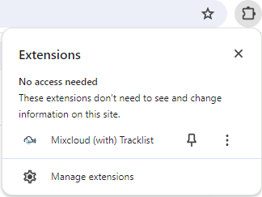

Due to changes made to Mixcloud's website, it is no longer possible to integrate tracklists directly on the Mixcloud webpage.
Now, you can access and interact with tracklists through the extension's browser popup.
Simply click the extension icon to view the tracklist. You can still conveniently play tracks
directly from this popup.
Tracklist displayed is the one from your first mixcloud open tab (if you have multiple tabs open). Tracklists from multiple tabs will be handled in a future update.
One last point, Chrome by default hide extensions in its extension menu (upper right button on the screen). You can still pin it with a click on pin icon.
